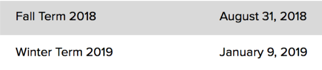

密西根大学每一个学院收取不同金额的学费，具体请详见：
http://www.ro.umich.edu/tuition/tuition-fees.php#fullterm
缴费的最好方式是到安娜堡之后开户转账，学费截止日期大约在选课后一个月。
另外,学校还会向学生强制收取一部分Mandatory Fees,其中包括选课费,学生政府费用等等。缴费的方法有几种, 网上转账, 当面提交现金/支票, 或者邮寄支票。
具体请详见: http://www.finance.umich.edu/finops/student/payments
学费以及其他费用的due date及汇款方式2018年秋／冬季入学学费，其他费用，住宿以及食物的缴费日期如下：
1）如果持有美国银行卡，可以选择使用ePayment。具体操作流程如下：登陆Wolverine Access → 选择Student Center → 选择Finances Section下的Account Inquiry → 看到金额后选择Pay Now→ 你会被带到一个新的界面，选择Payment Profiles → Add eCheck Profile，添加完毕后，以后所有的fees都可以用这个账号来付款，无需任何手续费
2）如果不持有美国银行卡，学生和家长可以选择汇款中介完成国际转账。因为orientation时间离due date非常近，到达安娜堡之后再办银行卡并转账时间并不充裕。为了避免late fees（$30）和其他的后果（比如无法完成选课），强烈建议大家第一次缴费时使用汇款中介。办完美国银行卡后便可通过ePayment进行付款。
Payment信息：http://www.finance.umich.edu/finops/student/payments
宿舍：
交完定金后，4月至8月期间，University of Michigan每周都会发送housing application的邮件。五月7日是第一轮housing application的deadline，之后就是先到先得了。6月至8月期间，University of Michigan会通过邮件发送你的housing合同，请注意查收并在3天内完成。8月初你就能知道你的room assignment，室友信息，等等。
Housing信息：http://www.housing.umich.edu/applications/freshman